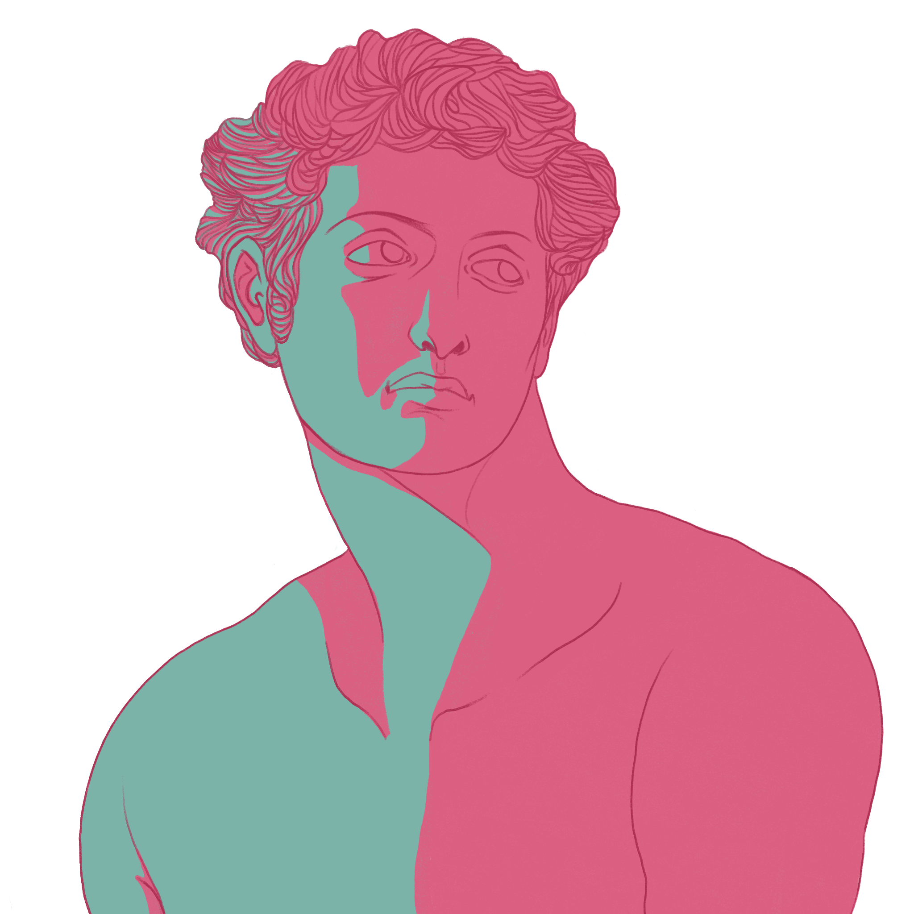
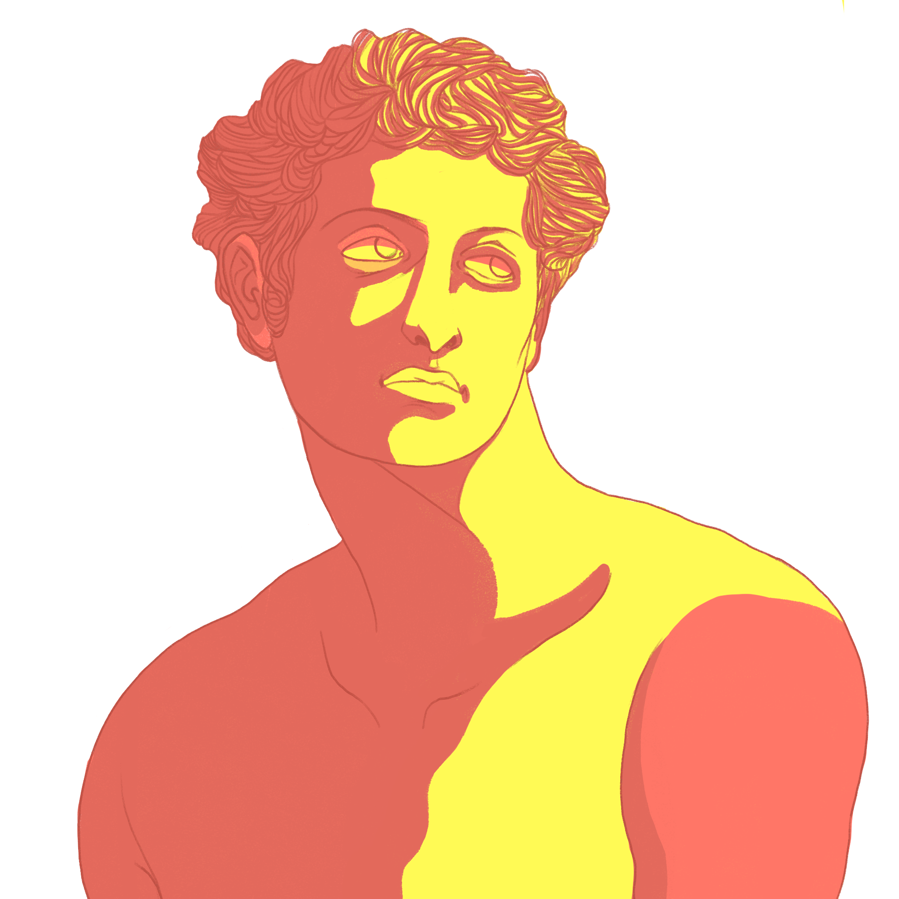
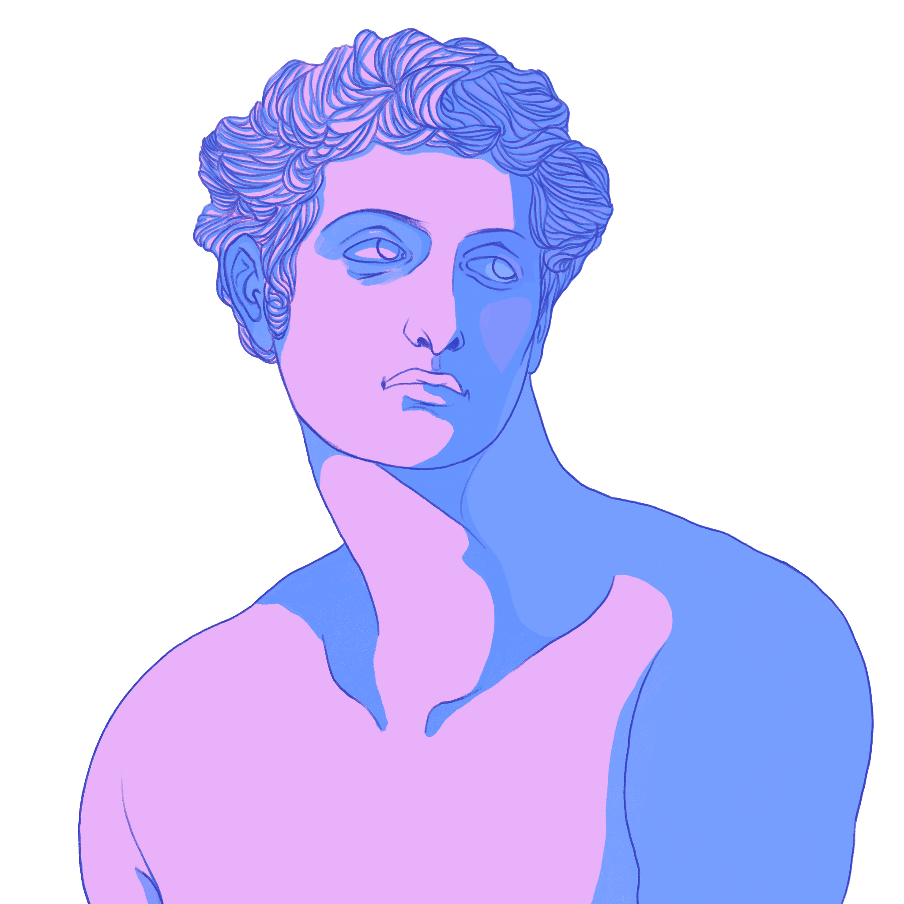

Ever felt frustrated having worked so hard on a drawing only to find it still looks flat? Is it the proportions? The perspective? Perhaps the composition? Whilst these all play an integral part, the most effective method of making your drawings appear three dimensional, is understanding how light logic works.
  Light always travels in a straight line. The shadows that are made by the light are always in a direct response to whatever the light hits, whatever angle the light is coming from and the intensity of the light source. So if bright, high sunshine hits a tree directly from above, it makes a short shadow shape, that doesn’t necessarily help you as an artist to describe the subject. Later in the day when the sun is very low, it will make a longer, more interesting shadow shape, usually more representative of the essence of the tree and the presence of light. If a single light hits a cube, it will make a square shape – if a single light hits a sphere, an ellipse shape. This is called ‘light logic’ and the shadow produced is called a Cast Shadow.